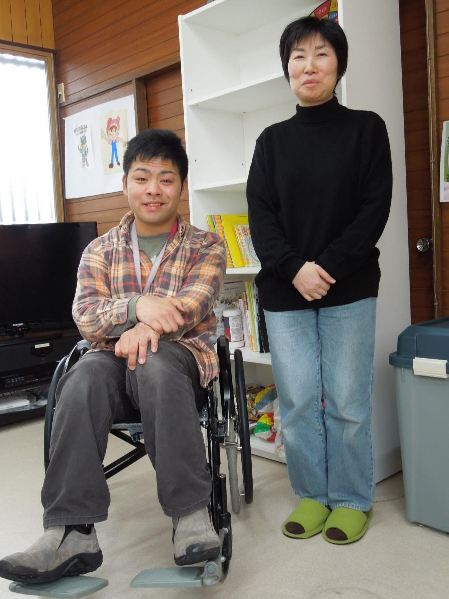

震災と障がい、そして地域コミュニティの再生
 日本が壊滅的な地震と津波に見舞われてから3年。被災自治体も、災害時に障がいを持つ人々のニーズに対応できるよう、様々な取り組みを始めています。
日本が壊滅的な地震と津波に見舞われてから3年。被災自治体も、災害時に障がいを持つ人々のニーズに対応できるよう、様々な取り組みを始めています。
「これでこの世の終わりなんだなと思いました。」石森祐介さんは、2011年に東北地方太平洋側沿岸部を襲った地震と津波から生き延びた青年の一人です。彼は、マグニチュード9.0の地震とそれに続く津波で甚大な被害を受けた石巻市で暮らしています。
石森さんには脳性まひによる身体障がいがあるため、まだ年若い人生の大半を車椅子で過ごしています。彼は2011年3月11日、津波警報が鳴り響くなか、ほんの数分差で津波が自宅を襲ってきたことを今も覚えています。石森さんは、その時に感じた無力感と、母親と祖母が彼を救うため、必死の思いで自宅の二階に引き上げてくれたことを忘れることが出来ません。
「近所一帯が真っ黒な湖のようになり、あらゆるものがその中に飲み込まれていきました。」彼の電動車椅子も津波によって使えなくなってしまいました。

死者と負傷者は2倍に
それでも石森さんは自分は生き残れて幸運だったと言います。日本障害フォーラム（JDF）によると、東日本大震災では、身体的、精神的、そして知的障がいを持つ人々が怪我をしたり犠牲になった割合が、健常者の約2倍にも上りました。
これには多くの理由があります。例えば早期警報が、障がい者固有のニーズに合わせて作られていませんでした。こうしたことが、例えば聴力障がいを持つ人々が逃げ遅れる原因となりました。また介助を必要とするすべての人々が避難できるよう確保するためのシステムも必ずしも十分ではありませんでした。
また知的・精神障がいを抱える人々にとって、被災後の生活も同様に大変でした。津波が襲ってから数週間後、石巻市では地域の社会福祉や医療関係者が、避難所で生活を送っていない障がい者の方々も含め、その生活状況等を把握する試みを開始しました。
この戸別訪問で、精神障がいや知的障がいを持つ多くの人々が、被災した家屋の2階や車のような狭い空間で窮屈に生活していることが判明しました。最初は避難所、やがて震災から数ヶ月後に建てられた集合仮設住宅での生活は、多くの障がい者やその家族、介助者にとって、耐え難いものだったのです。
避難者でごった返し、緊張状態を強いる避難所の環境は、障がいを抱える人々にとって、とりわけストレスの多いものでした。多くの場合、障がい者が抱えている特別なニーズ、特に目に見えないニーズについて、他の避難者の方々の理解も不十分だったのです。
「避難者の中には、時に障がい者が大声で話すことに苛立ち、苦情を言う人もいました。」福祉関係者の一人はこのように話しています。「また家族や介助をする側も、障がい者の方々が周囲に迷惑をかけるのではないかと不安に思い、多くの方々が自発的に避難所から去らざるを得ませんでした。」
「そこに居続けることは、僕には無理でした。」
津波の翌朝、石森さん一家は自衛隊に救出され、避難所が設置されていた東松島市役所に移されました。しかしながら2日後、石森さんは避難所を離れおじにあたる方の家に身を寄せることになります。
車椅子がなければ、石森さんはご自身で動くことが困難です。一方で、たとえ車椅子があったとしても階段などの段差を上れませんし、移動が困難な人々に配慮した風呂場やトイレもありませんでした。
「バリアフリーの施設が整っていない市役所では、避難生活は続けられませんでした。」そしてそこから自宅に戻るまで、さらに2ヶ月もかかりました。この間数々な困難がありましたが、それでも政府が建てた仮設住宅に入居するという選択肢が、石森さんにはありませんでした。「理由は単純。仮設住宅が車椅子を考慮して設計されていなかったからです。」と彼は説明しています。
震災から得た教訓
「石巻市は、石森さんのような障がいを持つ方々の被災体験から学ぼうと最大限努力しています。」と述べるのはOCHA神戸事務所長の渡部正樹。「石巻市は、障がいを抱える人々の多様で特別なニーズに対してより良い対応ができるように、『石巻市障害者計画』などを改訂しています。」
災害対応で鍵となるいくつかの施策はすでに実施中です。将来災害が起こった際、支援グループが活用できるようなデータベースを構築し、詳しい情報を登録するよう、障がいを持つ人々に促しています。また災害時に福祉避難所として障がい者が利用できるように地域の福祉施設と事前合意を結ぶ一方、学校などの指定避難所には車椅子利用者でも利用できるよう折りたたみ式スロープなどの設備を順次導入しています。さらには、障がいを持つ人々それぞれの事情に則した避難・支援計画の策定も目指しています。
障がいと復興
2011年に家を失った被災者のための長期的解決策として政府が支援している復興公営住宅も、依然として数は限られていますが、少しずつ建設が始まりました。公営住宅や福祉施設は、障がいを持つ人々には優先的に割り当てられます。
石森さんは現在、障がいを巡る問題についてアドボカシーを行うNGOの一員として働いています。彼は、街のインフラや商業施設、それに公共施設で「ユニバーサルデザイン」が普及するよう取り組んでいます。そして、新しい石巻市が廃墟から立ち上がり、障がいを持つ人々がより積極的に、そしてもっと目に見えるかたちで社会生活を送れるような街になって欲しいと望んでいます。そしていつの日か、障がいを持つ若者たちが地域のほかの人々と協力して、自分たちのふるさと再生に貢献できるような、開かれたそしてクリエイティブな場を街の中心部に創り出すことが石森さんの夢です。
最後に、今回取材にご協力いただいた石巻市役所障害福祉課、被災地障がい者センター石巻、石巻市・女川町障がい者総合サポートセンターくるみ、そして石巻祥心会の皆さんに、この場をお借りして心よりお礼申しあげます。
＊写真上：日本赤十字社の仮設遊技場で遊ぶ福島の子どもたち（提供：日本赤十字社）
＊写真下：石巻市のNGO事務所での石森祐介さん（提供：OCHA神戸事務所）
＊写真下：石巻市のNGO事務所での石森祐介さん（提供：OCHA神戸事務所）